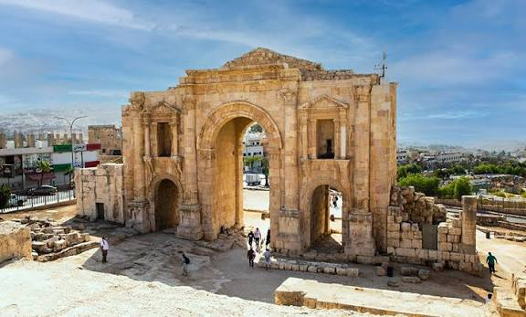
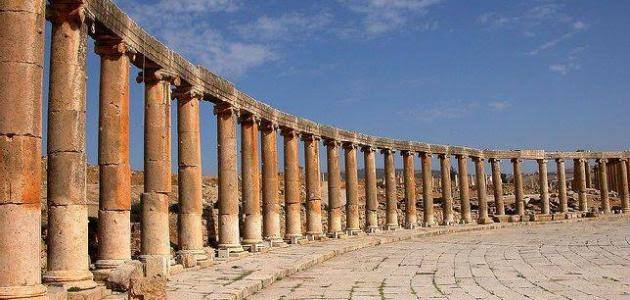
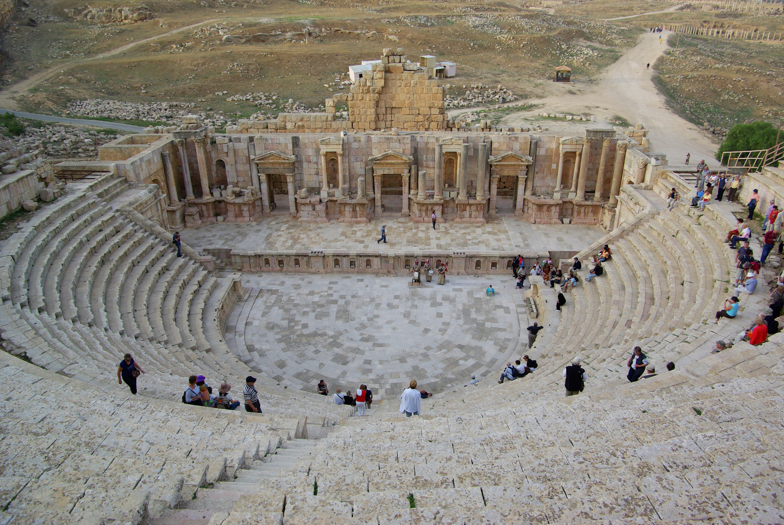
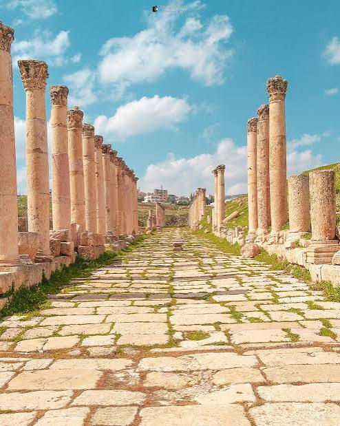
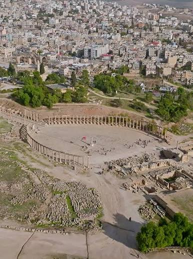
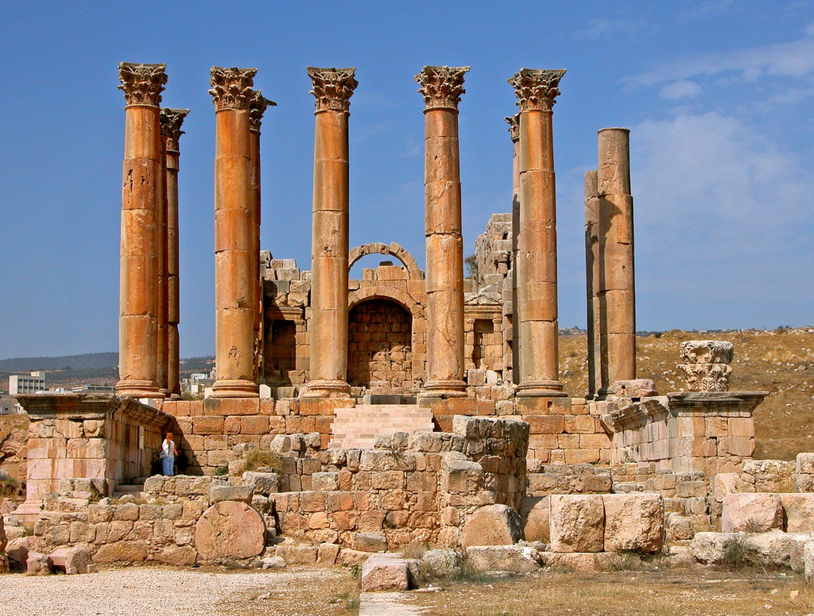
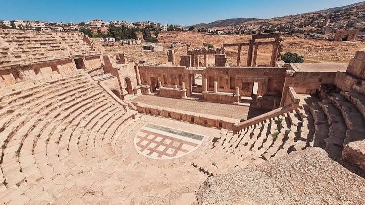

قوس هادريان
بوابة أثرية ضخمة أُنشئت تكريماً للإمبراطور الروماني هادريان خلال زيارته للمدينة.

تُعد جرش من أهم المدن الأثرية في الأردن، وتشتهر بآثارها الرومانية وشوارعها المرصوفة بالحجارة وأعمدتها الضخمة.
تقع مدينة جرش في شمال الأردن، وهي مركز محافظة جرش، وتبعد مسافة تقارب 48 كيلومتراً عن العاصمة عمان.
ازدهرت جرش خلال العصر الروماني، وكانت من المدن المهمة في منطقة الديكابولس، وهي مجموعة من المدن التاريخية في بلاد الشام.
تشتهر بالمعابد والمسارح والساحات والأعمدة الرومانية، إضافة إلى المهرجانات والفعاليات الثقافية التي تستضيفها المدينة.
عُرفت جرش قديماً باسم جراسا، وكانت مركزاً تجارياً وحضارياً مهماً في المنطقة.
شهدت المدينة تطوراً عمرانياً كبيراً، وظهرت فيها المباني العامة والمعابد والساحات والشوارع المنظمة.
وتُعد آثار جرش شاهداً على تنوع الحضارات التي مرت بالمنطقة، خاصة الحضارات الرومانية والبيزنطية.
تضم جرش مجموعة من المعالم التي تعكس روعة العمارة القديمة.

بوابة أثرية ضخمة أُنشئت تكريماً للإمبراطور الروماني هادريان خلال زيارته للمدينة.

مسرح روماني أثري يتميز بتصميمه المدرج وقدرته على استيعاب أعداد كبيرة من الزوار.

شارع أثري طويل تحيط به الأعمدة الحجرية، ويُعد من أشهر معالم المدينة.

ساحة أثرية واسعة تحيط بها الأعمدة، وتتميز بتصميمها الهندسي الفريد.

معبد أثري مخصص للإلهة أرتميس، ويتميز بأعمدته الضخمة وموقعه المرتفع.

مسرح أثري استُخدم قديماً للعروض والاجتماعات والأنشطة العامة.
التجول بين المعالم القديمة والتعرف على تاريخ المدينة.
التقاط الصور للأعمدة والمسارح والساحات الأثرية.
التعرف على الفنون والعروض والفعاليات الثقافية في جرش عند إقامتها.
استكشاف الأسواق والمنتجات التقليدية والتعرف على الثقافة المحلية.
يُعد مهرجان جرش للثقافة والفنون من أبرز الفعاليات الثقافية في الأردن. ويستضيف عادةً عروضاً موسيقية ومسرحية وفنية وثقافية بمشاركة فنانين من الأردن وخارجه.
يساهم المهرجان في تنشيط السياحة وتعريف الزوار بالثقافة الأردنية والفنون المحلية.
التعلم: اكتساب معلومات عن الحضارة الرومانية وتاريخ المنطقة.
الثقافة: التعرف على الفنون والمهرجانات والتراث المحلي.
الاستكشاف: مشاهدة المعالم الأثرية والهندسية القديمة.
الترفيه: الاستمتاع بالفعاليات والأنشطة الثقافية والسياحية.